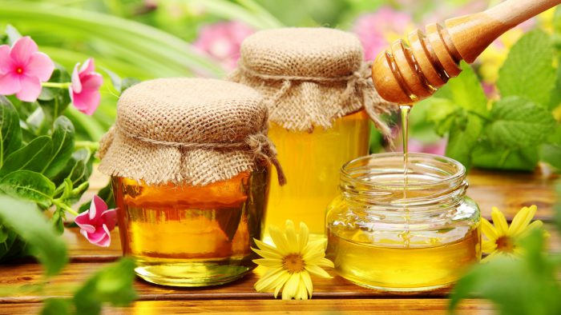

„Femeia la 20 de ani are figura pe care i-a daruit-o natura, la 30 de ani are figura pe care i-a modelat-o natura, iar la 50 de ani figura pe care o merita.” spunea Coco Chanel.Va propun si azi INTOARCEREA LA NATURA , modelarea chipului in mod natural si pastrarea frumusetii si sanatatii fetei prin metode simple, de calitate si verificate in mii de ani.Azi voi aduce in atentia dumneavoastra cateva informatii despre unul din cele mai vechi alimente de pe pamant – MIEREA – aliment complex, medicament, ingredient terapeutic si cosmetic.
MIEREA, nectarul trupului si al sufletului, a demonstrat de-a lungul miilor de ani ca „frumusetea vine din interior”. Efectele si folosirea ei in cosmetica: puteti vedea in acest articol despre cum poti sa-ti faci un automasaj cu miere si masca cu miere, iar alegerea tipului de miere o puteti face cu usurinta, dupa ce veti citi acest articol si cel de saptamana viitoare.Combinarea ei cu alte produse apicole sau cu alte ingrediente naturale, produce efecte cumulative, iar ceea ce este mai important mierea este indicata tuturor tipurilor de ten, Ph-ul mierii este usor acid.
„Mierea este un produs apicol obtinut de catre albine prin prelucrarea nectarului florilor, a manei si a unor secretii dulci de pe frunze si depozitat in celulele fagurilor constituind hrana energetica a populatiei din stup.Mierea se clasifica dupa speciile de plante din care provine nectarul: monoflora, si poliflora, dupa culoare, gust, este socotita un produs alimentar si totodata un medicament.Valoarea terapeutica a mierii este data de: plantele din care provine, enzimele secretate de albine in timpul procesarii (aprox.1 procent), multitudinea de vitamine, minerale (cele mai mari cantitati sunt in mierea de mana).Gustul dulce, usor parfumat, cu consistenta vascoasa sau cristalizata, este dat de complexul de zaharuri simple (glucoza si fructoza in cea mai mare parte), este usor asimilabila de catre organism fiind considerata un aliment prin excelenta energetic.
Proprietatiile generale ale mierii
- antimicrobiene
- calmante
- expectorante
- combate insomnia
- actiune usor laxativa
- detoxifiant al ficatului si rinichilor
- combate anemia
- antiinfectios natural
- ajuta la digestie
- ajuta la absorbtia unor elemente ( calciu, magneziu,…)
Pe langa aceste proprietati generale fiecare sort de miere are anumite caracteristici specifice plantelor melifere din care provine, iar in articolul urmator o sa va prezint principalele tipuri de miere din flora autohtona.Consumul de miere si produse apicole in mod constant, dar judicios administrate, impreuna cu folosirea ei frecventa in cosmetica va poate asigura sanatatea pielii, tonicitatea si prospetimea de lunga durata.
